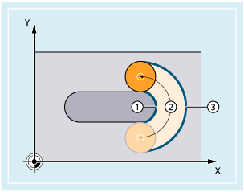
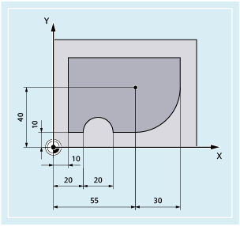

Der programmierte Vorschub bezieht sich bei eingeschaltetem Korrekturbetrieb G41/G42 für den Fräser-Radius zunächst auf die Fräsermittelpunktsbahn (vgl. Kapitel "Koordinatentransformationen (Frames)").
Beim Fräsen eines Kreises (gleiches gilt für Polynom- und Spline-Interpolation) verändert sich der Vorschub am Fräserrand unter Umständen so stark, dass das Bearbeitungsergebnis darunter leidet.
Beispiel: Fräsen eines kleinen Außenradius mit einem größeren Werkzeug. Der Weg, den die Außenseite des Fräsers zurücklegen muss, ist sehr viel größer als der Weg entlang der Kontur.
① | Kurzer Weg der Fräserinnenseite entlang der Kontur |
② | Werkzeugbahn |
③ | Langer Weg der Fräseraußenseite |
Hierdurch wird an der Kontur mit einem sehr kleinen Vorschub gearbeitet. Um solche Effekte zu verhindern, sollte bei gekrümmten Konturen der Vorschub entsprechend geregelt werden.
| Konstanter Vorschub an der Fräsermittelpunktsbahn Die Steuerung hält die Vorschubgeschwindigkeit konstant, Vorschub-Overrides werden ausgeschaltet. |
| Konstanter Vorschub an der Kontur (Werkzeugschneide) Diese Funktion ist standardmäßig voreingestellt. |
| Konstanter Vorschub an der Werkzeugschneide nur an innengekrümmten Konturen, sonst auf der Fräsermittelpunktsbahn Die Vorschubgeschwindigkeit wird bei Innenradien reduziert. |
In diesem Beispiel wird zunächst mit CFC-korrigiertem Vorschub die Kontur hergestellt. Beim Schlichten wird der Fräsgrund mit CFIN zusätzlich bearbeitet. Hierdurch lässt sich verhindern, dass der Fräsgrund an Außenradien durch zu hohe Vorschubgeschwindigkeit beschädigt wird.
| Programmcode | Kommentar |
|---|---|
| N10 G17 G54 G64 T1 M6 | |
| N20 S3000 M3 CFC F500 G41 | |
| N30 G0 X-10 | |
| N40 Y0 Z-10 | ; Zustellen auf erste Schnitt-Tiefe |
| N50 KONTUR1 | ; Unterprogramm-Aufruf |
| N40 CFIN Z-25 | ; Zustellen auf zweite Schnitt-Tiefe |
| N50 KONTUR1 | ; Unterprogramm-Aufruf |
| N60 Y120 | |
| N70 X200 M30 |
Siehe auch:
Vorschuboptimierung bei gekrümmten Bahnstücken (CFTCP, CFC, CFIN): Weitere Informationen